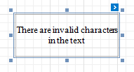

Add Barcodes to a Report
Overview
To insert a barcode into a report, drag the Barcode item from the Toolbox onto the report's area.

After creating the barcode, select the barcode type (symbology) in the Barcode Tools toolbar tab's Symbology gallery.
After specifying the symbology, you can customize the type-specific options of the barcode, which are listed in the Property Grid under the Symbology property.
Main Options
You can use the Binary Data property to supply the data that a barcode should encode.
To specify the bar width (a barcode's resolution), use the following options:
- Automatically calculate the bar width according to a barcode's dimensions by enabling the Auto Module option;
- Provide a fixed bar width value using the Module property.
The following are some additional barcode options:
Use the barcode's Text property to provide accompanying text. The Show Text property allows you to show or hide this text.
Use the Orientation property to rotate a barcode.
Use the Padding property to specify the indent between bars and the barcode's inner boundaries.
Frames for QR Codes
For QR Codes (QR Code, GS1 QR Code, and EPC QR Code), you can use the Frame Options property to configure the frame around the barcode. The Corner and Rectangle frames are available for all types of QR Codes.
Corner Frame
The corner frame looks as follows:

You can specify the following properties for corner frames:
Frame Color
Specifies the frame color.
Frame Width
Specifies the frame width in pixels.
Padding
Specifies the distance between the frame and QR code.
Text
Specifies the text that displayed in the frame.
Text Alignment
Specifies how the text is aligned with the frame line.
Text Color
Specifies the color of the text in the frame.
Text Position
Specifies how the text is positioned against the QR code.
Rectangular Frame
The rectangular frame looks as follows:

You can specify the following properties for corner frames:
Corner Radius
Specifies rounded corners for the rectangular frame in pixels.
Frame Color
Specifies the frame color.
Frame Width
Specifies the frame width in pixels.
Padding
Specifies the distance between the frame and QR code.
Text
Specifies the text that displayed in the frame.
Text Alignment
Specifies how the text is aligned with the frame line.
Text Color
Specifies the color of the text in the frame.
Text Position
Specifies how the text is positioned against the QR code.
Bind to Data
You can bind the bar code's Text property to a data field obtained from a report's data source. Click the control's smart tag, expand the Expression drop-down list and select the data field.
You can also click the Expression option's ellipsis button to invoke the Expression Editor. This editor allows you to construct a complex binding expression with two or more data fields.
Common Errors
The following section explains how to work around the most frequently encountered errors related to the incorrect use of barcodes.
The following error message is shown in place of the barcode if the control's dimensions are too small to fit the barcode with its specified resolution.
To get rid of this error, enable the Auto Module property and/or increase the barcode's dimensions.
The following error message appears when the data supplied to a barcode contains characters that are not supported by this barcode type.

To avoid this error, supply data that applies to a particular barcode specification.